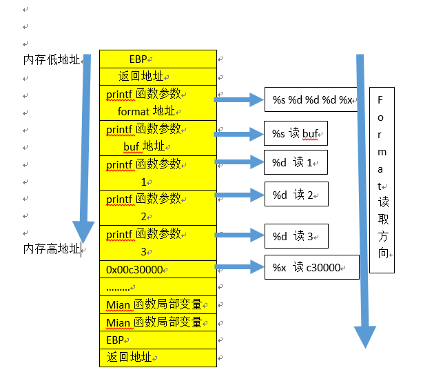

格式化字符串
学习C语言的过程中几乎都会使用到格式化字符串的输入和输出，例如：
#include <stdio.h>
int main(void){
printf("My name is %s.\n","Cruise");
printf("I am %d years old.","18");
return 0;
}运行程序会得到输出：
My name is Cruise.
I am 18 years old.程序中的%s和%d都被后面的具体内容给替换了，这就是格式化输出的模式。除了这两格式符号外还有其他的格式符，具体如下：
| 格式符 | 含义 | 类型 |
|---|---|---|
| %d | 十进制数（int） | 值 |
| %u | 无符号十进制数 (unsigned int) | 值 |
| %x | 十六进制数 (unsigned int) | 值 |
| %s | 字符串 ((const) (unsigned) char *) | 引用（指针） |
| %n | %n符号以前输入的字符数量 (* int) | 引用（指针） |
值得特殊说明的是%n格式符，其他格式符都是用来打印输出的，而%n可以用来把一个int型的值写到指定的地址中。
%n: 该符号前输入的字符数量会被存储到对应的参数中去
int i;
printf ("12345%n", &i);%n前面有五个字符，这里i的值就是5。
int c = 0;
printf("the use of %n", &c);%n前面有11个字符，所以c就是11。
printf的特性和漏洞原理
为什么说这个平平无奇的printf函数会是C程序中的漏洞产生原因呢？因为它存在几个特性，程序员很容易栽倒在这个几个特性上面，同时这些特性能够被攻击者轻易利用来进行程序攻击。
printf()函数的参数个数不固定
先看一个正常的程序：
#include <stdio.h>
int main(void)
{
int a=1,b=2,c=3;
char buf[]="test";
printf("%s %d %d %d",buf,a,b,c);
return 0;
}编译后运行得到：
test 1 2 3这个结果是正常的。那么如果printf的参数数量不匹配会发生什么？将printf改为：
printf("%s %d %d %d %x",buf,a,b,c);在上面的例子中格式字符串需要5个参数，但后面只提供了4个。
- 该程序能够通过编译么？
- printf()是一个参数长度可变函数。因此，仅仅看参数数量是看不出问题的。
- 为了查出不匹配，编译器需要了解printf()的运行机制，然而编译器通常不做这类分析。
- 有些时候，格式字符串并不是一个常量字符串，它在程序运行期间生成(比如用户输入)，因此，编译器无法发现不匹配。
- 那么printf()函数自身能检测到不匹配么？
- printf()从栈上取得参数，如果格式字符串需要3个参数，它会从栈上取3个，除非栈被标记了边界，printf()并不知道自己是否会用完提供的所有参数。
- 既然没有那样的边界标记。printf()会持续从栈上抓取数据，在一个参数数量不匹配的例子中，它会抓取到一些不属于该函数调用到的数据。
- 如果有人特意准备数据让printf抓取会发生什么呢？
事实就是这样改动过后，依然能够成功编译运行，但是得到的结果变为：
test 1 2 3 c30000这个c30000是什么东西呢？根据栈布局，画一个形象的图来看看这个过程：

也就是说，只要我们能够控制format的,我们就可以一直读取内存数据，这就实现了任意地址的读取。
printf("%s %d %d %d %x %x %x %x %x %x %x %xn",buf,a,b,c)
test 1 2 3 c30000 1 80482bd bf8bf301 2f 804a000 740484d2 747365在写C的适合，经常会犯一些说不上是毛病的毛病，因为大多数情况下这个毛病都是正常的，但是实际上这个漏洞的存在可以实现读取任意地址。
比如我们要让程序读入一个名字并输出这个名字，应该这么写：
char str[100];
scanf("%s",str);
printf("%s",str);但是有时候，为了偷一下懒，可能会这么写：
char str[100];
scanf("%s",str);
printf(str);这看起来是没有什么问题，程序也正常的打印了名字，但是由于编程者的疏忽，把格式化字符串的操纵权交给用户，就会产生后面任意地址读写的漏洞。
#include <stdio.h>
int main(void)
{
char a[100];
scanf("%s",a);
printf(a);
return 0;
}如果用户输入为：
AAAA%x,%x,%x,%x,%x,%x,%x,%x,%x,%x,%x程序的输出为（此次）：
AAAA61fe4c,61ffcc,76e4d250,70734fbf,fffffffe,76e473da,41414141,252c7825,78252c78,2c78252c,252c7825注意，这其中有一组为41414141，那就是这个字符串开始的位置。通过不断的取变量操作，最终我们就能读取到程序的每一个位置。
利用%n格式符写入数据
这个是刚刚说到过的%n格式符，这个格式符的使用也是printf的漏洞产生原因之一。因为通过这个格式符，我们可以通过printf实现访问栈内数据，甚至修改内存地址。
#include <stdio.h>
void main()
{
int num=66666666;
printf("Before: num = %d\n", num);
printf("%d%n\n", num, &num);
printf("After: num = %d\n", num);
}得到输出
Before: num = 66666666
66666666
After: num = 8现在我们已经知道可以用构造的格式化字符串去访问栈内的数据,并且可以利用%n向内存中写入值，那我们是不是可以修改某一个函数的返回地址从而控制程序执行流程呢？
但是%n的作用只是将前面打印的字符串长度写入到内存中,而我们想要写入的是一个地址,而且这个地址是很大的。这时候我们就需要用到printf()函数的第三个特性来配合完成地址的写入。
自定义打印字符串宽度
printf的格式符还可以限定字符串的宽度，在格式符中间加上一个十进制整数来表示输出的最少位数，若实际位数多于定义的宽度，则按实际位数输出，若实际位数少于定义的宽度则补以空格或0。把上一段代码做一下修改并看一下效果:
#include <stdio.h>
void main()
{
int num=66666666;
printf("Before: num = %d\n", num);
printf("%.100d%n\n", num, &num);
printf("After: num = %d\n", num);
}Before: num = 66666666
0000000000000000000000000000000000000000000000000000000000000000000000000000000000000000000066666666
After: num = 100可以发现num值被改为了100。（有的编译器可能会自动禁止使用修改num的值，所以记得关掉内存保护机制）
那么如何去覆盖一个地址呢？比如说要把0x8048000这个地址写入内存，那么应该把把该地址对应的10进制134512640作为格式符控制宽度即可：
printf("%.134512640d%nn", num, &num);
printf("After: num = %xn", num);Before: num = 66666666
中间的0省略...........
00000000000000000000000000000000000000000000000000000000000000000000000000000000000000000000000000000000000000000000000000000000000000000000000066666666
After: num = 8048000明白了这个原理之后，就可以实现任意地址的写入，这对于程序的安全性来说是一个十分严重的问题！
格式化字符串漏洞的检测
综上所述，格式化字符串可能产生的漏洞主要有两个：
- 任意内存位置的读取
- 任意内存位置的写入
而产生这两个漏洞的原因主要是：
- 使用格式化字符串时没有指定相应的格式符，或是格式符的个数和参数个数不匹配。
- 使用了
%n来改变已存在的变量的值。
因此格式化字符串漏洞要检测的主要就是：
- printf函数的格式符是否正确指定，参数个数是否匹配
- 是否使用了
%n来改变变量的值
只要检测出这两个操作的存在，并报告相应问题，就可以避免程序中格式符字符串漏洞的存在。